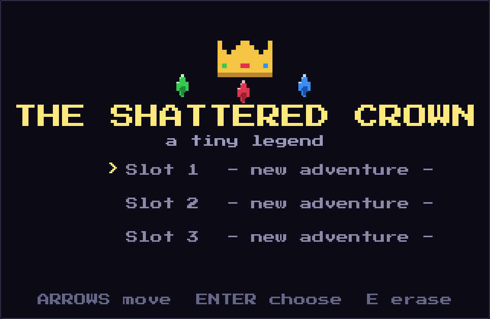
Long, long ago — before the meadow paths were walked, before the first lantern was lit — the land of Eldoria was wild and dark. It was the Crown of Eldoria, forged by the first heroes from three sacred jewels, that brought the balance: the Emerald of the deep forests, the Ruby of the burning sands, and the Sapphire of the frozen peaks. While the Crown sat whole upon its pedestal, crops grew tall, monsters kept to the shadows, and kids could chase fireflies long after bedtime.
Then came Morgrath.
Once the royal court's cleverest sorcerer, Morgrath grew jealous of a power he could study but never own. One starless night he split the Crown with a single forbidden word, scattering its three shards to temples at the far corners of the realm, each guarded by a monstrous general of his own twisted making. Then he raised the Dark Citadel in the Ashen Wastes and sealed himself behind a barrier no blade, bomb, or battering ram can break.
The land dimmed. Slimes oozed into the meadows. Skeletons climbed out of the desert. Wolves of living ice came down from the mountains. And in the little village of Willow, the elder Rowan looked at one brave kid — you — and saw the only hope Eldoria had left.
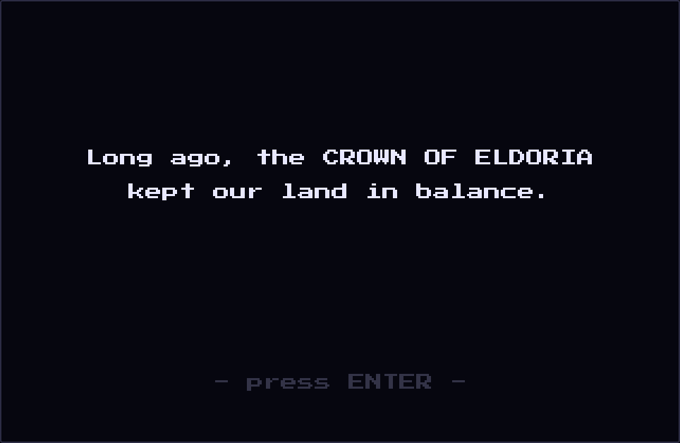
Your mission, hero:
| KEY | WHAT IT DOES |
|---|---|
| Arrows / WASD | Move your hero |
| SPACE (or Z) | Swing sword — also talk, read signs, open chests, buy |
| X | Use equipped item (bow, bombs, lantern, potion) |
| C (or TAB) | Switch equipped item |
| ENTER (or ESC) | Pause — inventory, equip and SAVE |
| M | Mute the music (but why would you?) |
Three save slots live on the title screen. The game auto-saves every time you enter or leave an area, find a treasure, or defeat a boss — and you can save anytime: press ENTER, then S. Falling in battle never erases your progress. Continue from your last save and march right back in!
Top of the screen, left to right: your hearts (lose them all and it's Game Over), gems, arrows and bombs (once you own their launchers), potions, dungeon keys, your three shard slots, and the item bound to X in the far corner box.
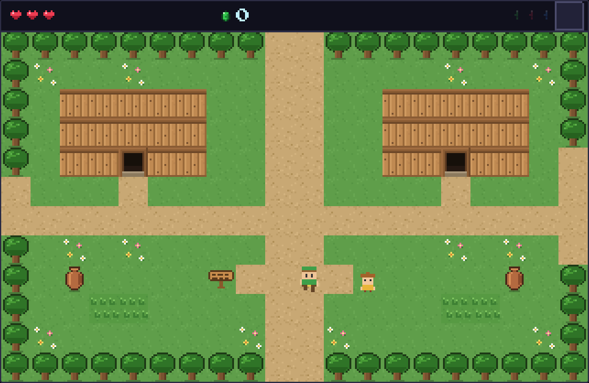
Willow Village's wise leader. Gives you 30 gems and your marching orders. Report to him after every shard!
Runs the village shop. Potion 40, ten arrows 20, five bombs 25, lantern 60. The lantern is the best 60 gems you will ever spend.
Willow's resident expert in being seven years old. Surprisingly useful rumors. Mostly jokes.
Watches the north road. Warns you about the mountain pass — listen to him, then go anyway. You're the hero.
Tends the southern fields. Knows which way the desert lies, and exactly how many crops the slimes have eaten.
Lives on the lake's edge. The fairy pond to the northeast? He found it. Ask him about the water.
Lives in a cave in the Frostpeaks (enter at the stairs on the high pass). Knows what the cracked boulder at Glacier Hollow needs. BOOM.
Camps in the desert. The eye above the ruins' door? She knows what it's waiting for. (It's an arrow. Bring a bow.)
Her hut sits at the swamp's edge. Speaks in riddles about a sunken shrine and a blade that "cuts twice as deep." She is not kidding.
Guardian of the healing ponds. Step into her waters and every heart refills. Completely free. Visit often!
Rules a hidden grove in the western forest behind a wall of bushes. Obsessed with Golden Acorns. Pays ROYALLY for them — see the Classified Section, page 15!
| WARES | PRICE | OUR VERDICT |
|---|---|---|
| Red Potion | 40 | Buy before EVERY boss. No exceptions. |
| 10 Arrows | 20 | Cheap. Eye switches don't shoot themselves. |
| 5 Bombs | 25 | Walls fear you now. |
| Lantern | 60 | The best gems you'll ever spend. Period. |
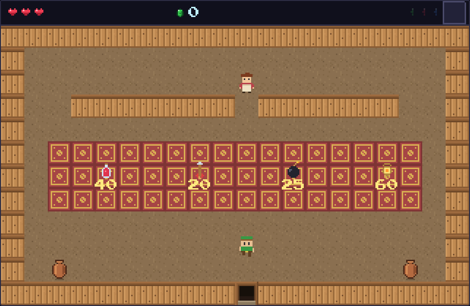
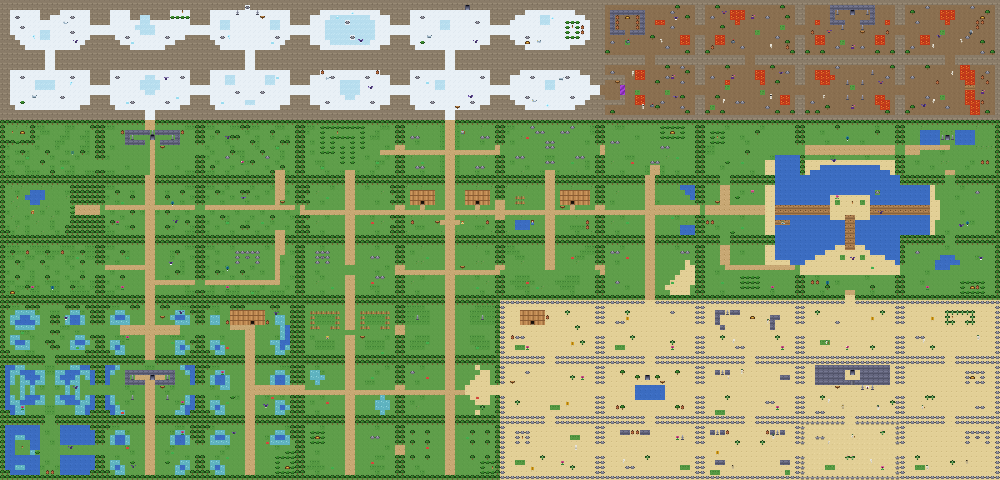
| REGION | DANGER | WHAT'S OUT THERE |
|---|---|---|
| Meadows | ★ | Home turf. Slimes, the village, the crossroads, a bombable gem cave. |
| Forest | ★★ | Dungeon 1, Nutwick's grove, 3 acorns, two gem chests. |
| Lake | ★★ | Fairy pond, the bridge island, a bush hiding a Heart Container cave. |
| Swamp | ★★ | Slow wading, the witch's hut, and the Sunken Shrine below the mire. |
| Desert | ★★★ | Dungeon 2, the oasis pond, mummies, a Heart Container boulder. |
| Frostpeaks | ★★★ | Dungeon 3 (bombs required!), the hermit, ice wolves, HC boulder. |
| Ashen Wastes | ★★★★★ | Behind the barrier. Knights, wizards, lava — and the Citadel. |
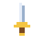
Your trusty starter. 1 damage. Also cuts grass, bushes and pots — Eldoria's economy runs on landscaping.
DOUBLE DAMAGE on everything. Sleeps beneath the swamp in the Sunken Shrine (page 16). Get it before the Citadel and thank us later.
Found in Vinewood Temple. Fires arrows with X. Comes loaded with 10. The only thing that can hit an eye switch!
Found in the Sandstone Ruins. Drops a bomb with X (comes with 5). Blows up cracked walls and cracked boulders. Stand back!
Buy it from Mira (60 gems) or find one early in the Sandstone Ruins. Lights torches with X and brightens dark rooms. Required for torch puzzles!
Found in Glacier Hollow. Run faster forever — and never slip on ice again. The puzzle-solver's best friend.
Press X to refill ALL hearts. Carry up to 4. Buy before every boss. This is the guide's number one commandment.
Your maximum hearts grow by one! Bosses drop them; three more hide in secret caves; one is buried in the Citadel; Nutwick holds another.
Nutwick's final reward: ALL damage you take is halved. Forever. Worth every acorn.
Opens one locked door in the dungeon where you found it. Our maps mark every key so you never waste one.
Opens the boss door. Guarded accordingly. No big key, no glory.
Emerald, Ruby, Sapphire. Each dungeon's boss guards one. Collect all three and the Barrier in the Ashen Wastes dissolves on sight.
HP = sword hits to defeat (Hero's Blade halves it!). DMG = hearts lost on contact.
Eldoria's welcome committee. One bonk. Practice your timing here.
Spicier cousin. Hops with less downtime — strike between bounces.
Weaves over pits and water. Wait for the swoop, then swing.
A rude plant. Sidestep its seeds and rush it — it barely moves.
Flashes, then dashes in a straight line. Step aside like a matador, then poke it while it's dizzy.
The beetle's track-team cousin. Bigger sidestep. Same dizzy poke.
Relentless walker. Backpedal and slash — your reach beats his bones.
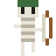
Keeps its distance and plinks at you. Zigzag in, or return fire with your own bow. Drops arrows!
Slow, tough, and patient. Hit-and-run four times — never trade hits. Sometimes drops bombs!
A slime that learned winter. Hits harder than its meadow kin.
Fastest chaser in the game. Don't run — turn and meet it with steel.
Floaty and annoying. Its shards travel in straight lines. Strafe, close distance, swat.
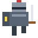
Armor shrugs off arrows entirely — you'll hear the clank. Sword and bombs only. Circle behind and chip away.
Blinks near you, fires, blinks away. The moment it appears is your moment — be swinging where it lands.
A stone eye that fires only when you line up with it. Approach diagonally and it never gets a shot. Harmless to touch!
A slime the size of a shed, guarding the Bow. Huge hops, huge landing lag. Punish every landing and keep your feet moving.
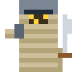
Hits like a falling pyramid. It telegraphs its dash — bait it, dodge it, then carve while it recovers. Patience wins.
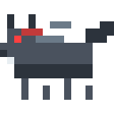
Charges across the ice where YOU can't turn — stand near a wall, dodge late, and let it crash. Guards the Power Boots.
Vanishes into the murk and pops up beside you spitting mud. Listen for the splash, swing where it surfaces. Guards the Hero's Blade!
Step one: see Elder Rowan (30 free gems!), read every sign, and mow the village lawns for pocket change. When your courage is topped up, take the west road out of the village square.
Step two: the crossroads. South lie the farms; keep west through the meadows. Slimes and the odd red slime patrol here — perfect sword practice. Work toward the forest border two screens west.
Step three: the forest. Tall trees, winding paths, spitters lobbing seeds from the undergrowth, and bats in the canopy. Head for the north-west clearing where stone statues flank a mossy staircase: Vinewood Temple.
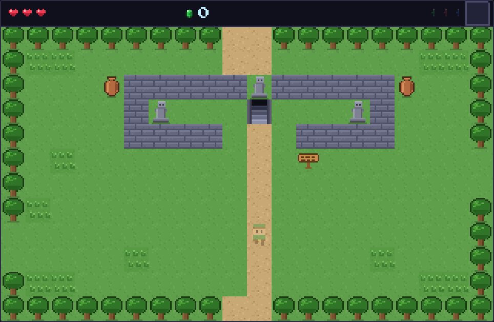
In the forest's western clearing, a suspicious wall of bushes hides a grove. Cut through and meet NUTWICK, KING OF SQUIRRELS, who pays out for Golden Acorns at 4, 8 and 12 collected. There's an acorn lying in his own grove. Take it. He won't notice. (He will absolutely notice. He counts them daily. Take it anyway.)
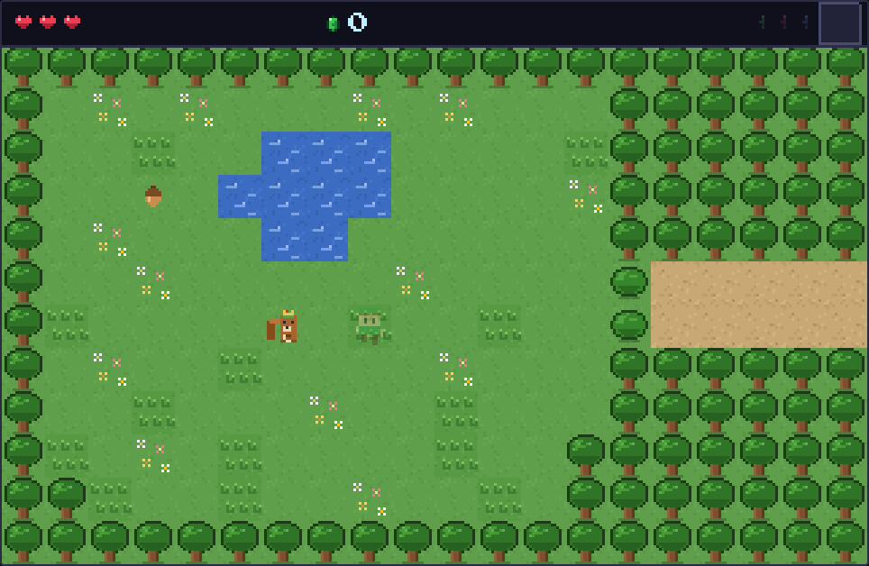
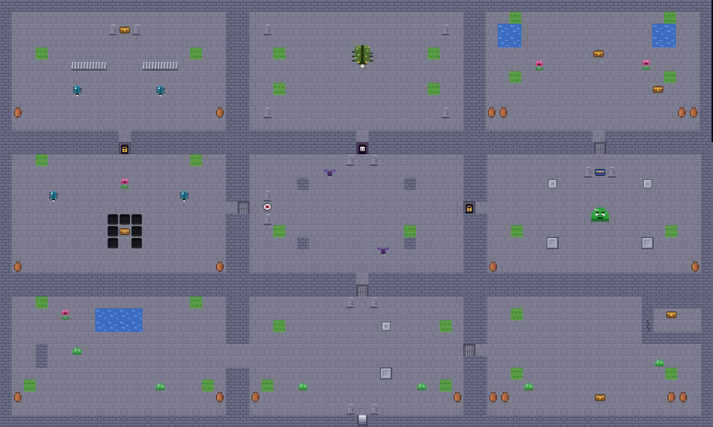
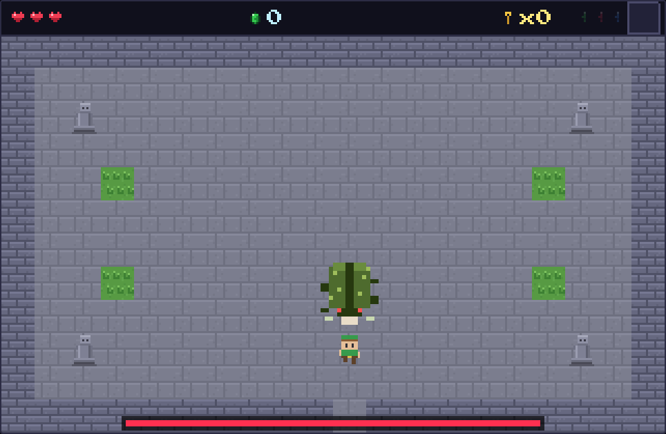
The temple's general is a beetle the size of a wagon, and your sword bounces right off its shell. Here's the trick the temple priests carved into the walls: it can't steer. Stand in its line, wait for the telegraph flash, hop aside — and when it slams into the wall, it's stunned and soft for a full three seconds. That's your window. Slash, retreat, repeat. Reward: Heart Container + THE EMERALD SHARD!
Getting in: cross the south meadows into the desert and head for the great ruin in the south-east. The door is sealed — but a stone eye watches from the facade. You have a bow now. You know what to do.
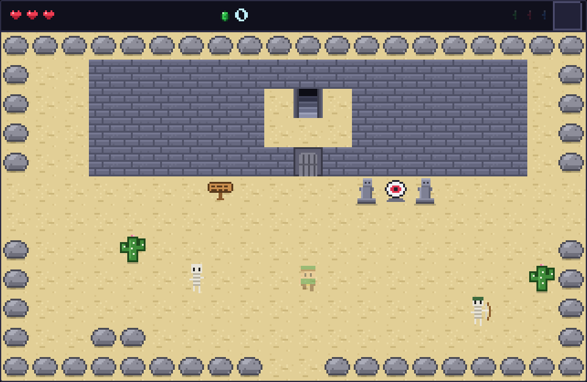
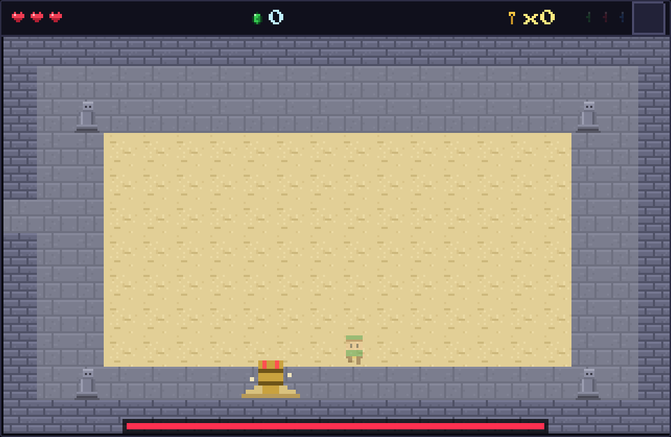
The arena floor churns. The wyrm is untouchable underground — watch the sand bulge, step away from the rising spot, and dodge the spit. Then it surfaces for five long seconds: attack! Sword if you're brave, arrows if you're sensible. Reward: Heart Container + THE RUBY SHARD!
Getting in: take the mountain pass north (Tomas will fret — wave cheerfully). On the high snowfield, a cracked boulder plugs a cave mouth. One bomb later, Glacier Hollow yawns open.
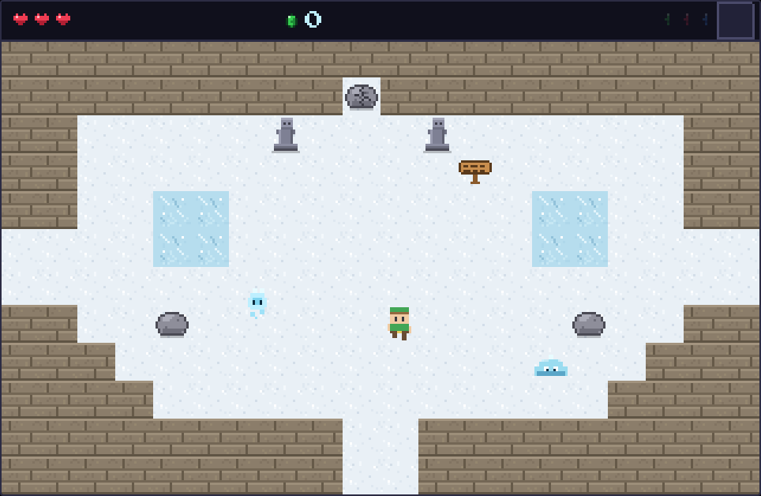
Ice rules: on blue ice you slide — steer gently, plan ahead. Blocks pushed on ice glide until they hit something. Every sokoban puzzle here is built on that. (Mess one up? Leave the room and return — blocks reset. The glacier is forgiving. The wolves are not.)
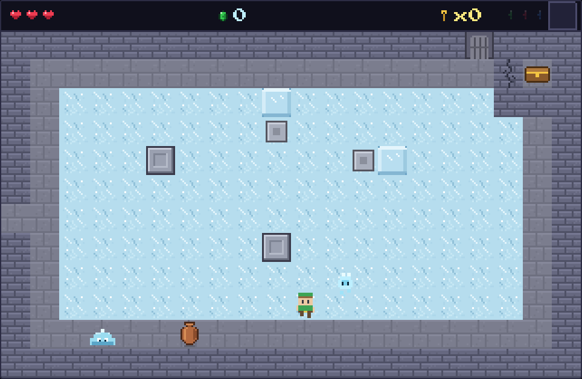
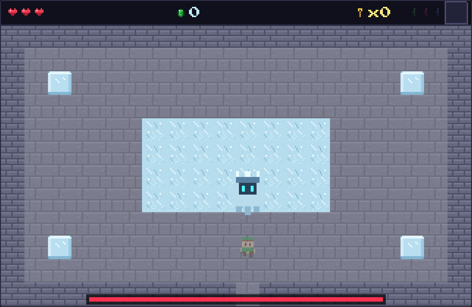
A frozen sorcerer who blinks around the arena hurling fans of ice. Halfway down, he calls frost wisps to the fight — swat them fast or drown in shards. He's vulnerable whenever he's visible: chase the materialize, land two hits, dodge the barrage, repeat. Reward: Heart Container + THE SAPPHIRE SHARD!
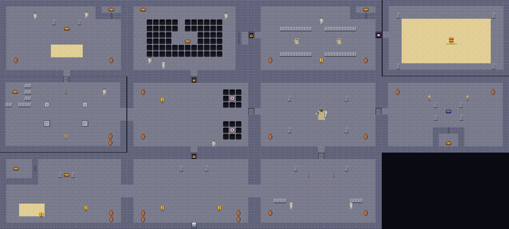
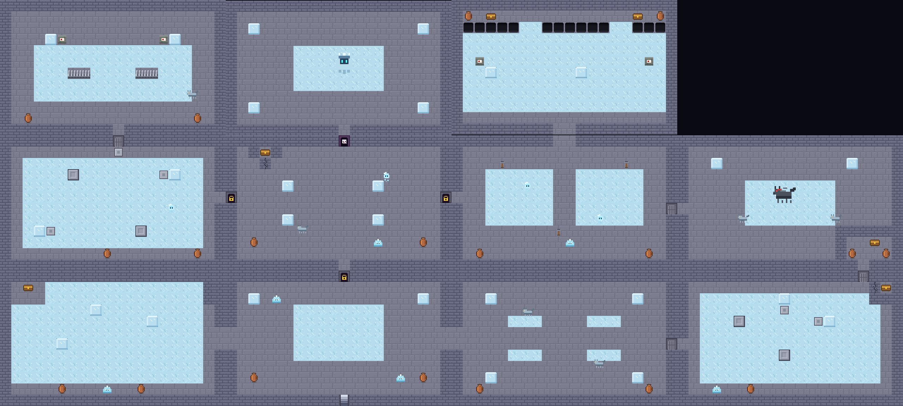
Three shards sing in your pack. East of the mountain pass, the Ashen Wastes begin — dead trees, boiling lava, and Morgrath's shimmering Barrier. Walk up to it with all three shards and watch it dissolve like sugar in rain. No button needed. You earned this.
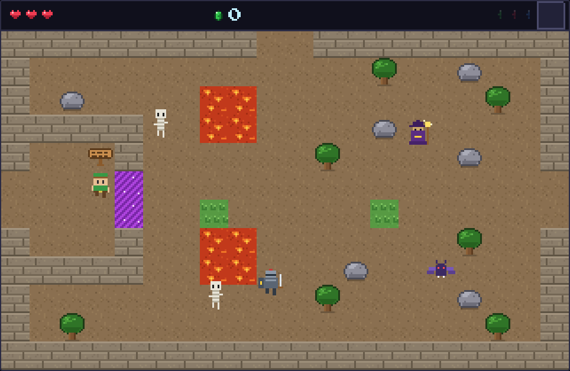
The Dark Citadel looms in the north-east. Checklist before the gates: Hero's Blade (page 16!), 4 potions, full bombs and arrows, and every Heart Container you can claim. This place is a fortress, a puzzle box and a final exam all at once.
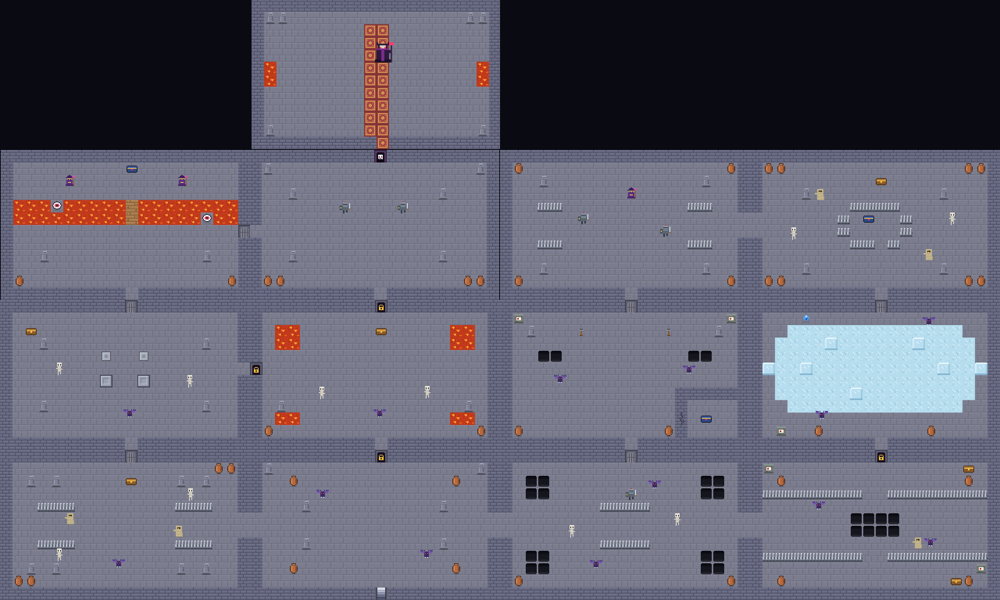
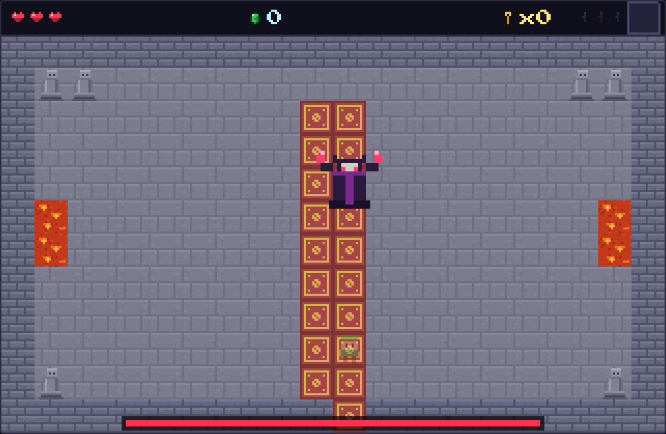
Morgrath fights like his wizards, only meaner: teleport, barrage, rest, repeat. The rhythm is your friend. When he materializes, he needs a moment to wind up — that moment belongs to your blade. Two clean hits per window, then break away before the bolts fan out. Keep your hearts above half: phase one is a warm-up, and you want to enter what's next strong.
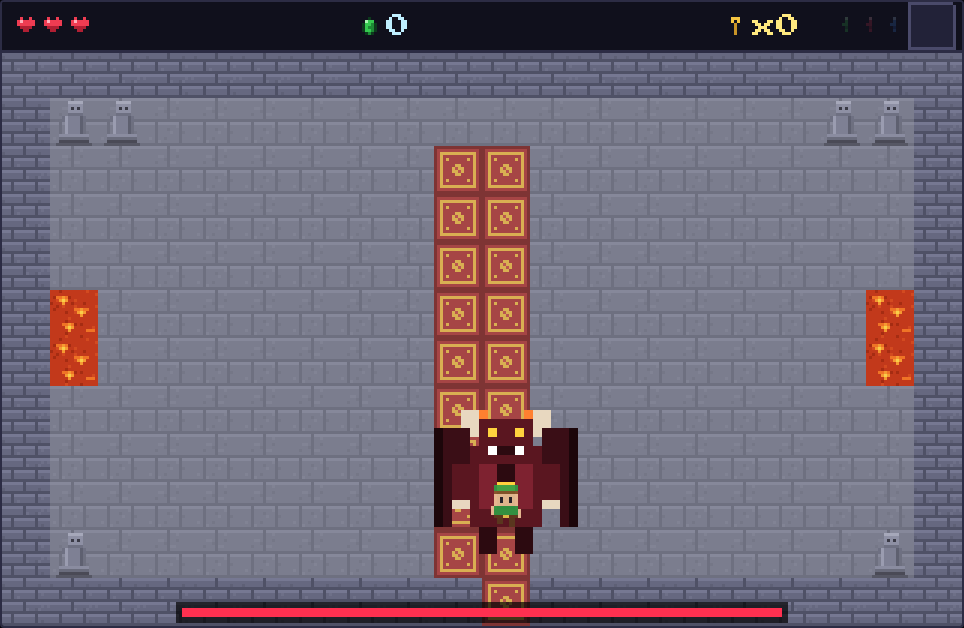
Drop the sorcerer and the throne room shakes... and what stands up is no longer a man. Demon Morgrath fills the room: fireball fans, charging rushes that crack the floor, and bat swarms when his health runs low. The plan:
When the last hit lands, the darkness peels away, the Crown reforges, and Eldoria gets its sky back. You did that. Roll credits, hero — and yes, your save keeps going afterward, with every secret still out there to find.
Twelve Golden Acorns hide across Eldoria. NUTWICK PAYS: 4 acorns → 100 gems. 8 acorns → HEART CONTAINER. All 12 → the OAK CHARM (all damage halved, forever). Here is every single one. You're welcome.
| # | WHERE | HOW |
|---|---|---|
| 1 | North meadow bluffs (NW of the village) | Tucked in a bush pocket — cut your way in |
| 2 | South fields, far SE corner | Behind the farm rows |
| 3 | Forest, NW alcove | Bush-sealed nook by the gem chest |
| 4 | Nutwick's own grove | Right under his nose. He counts them. Do it anyway |
| 5 | Forest gem cave | BOMB the boulder in the SE forest, acorn inside the cave |
| 6 | Lake NW shore | Bush cluster near the reeds |
| 7 | Lake bridge island | Cross the bridge to the island's heart |
| 8 | Frostpeaks, NW ledge | Bush-sealed snowy shelf |
| 9 | Frostpeaks, NE nook | Near the 20-gem chest peak |
| 10 | Deep swamp island (SW corner of the world) | Wade the shallows south |
| 11 | NE desert | Behind the cactus line |
| 12 | SW dunes | Pocket in the rocks near the desert road |
Beyond the three boss hearts, FOUR more await:
Collect everything and your life bar hits 11 hearts. Morgrath will weep.
Witch Morla's riddle is real. South-west through the swamp — wade the shallows, mind the deep water — ancient stones rise from the mire. The staircase between them sinks into the SUNKEN SHRINE, the one dungeon no quest requires... and the one every hero should finish.
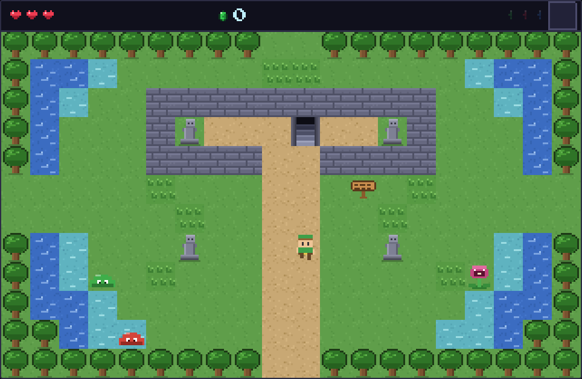
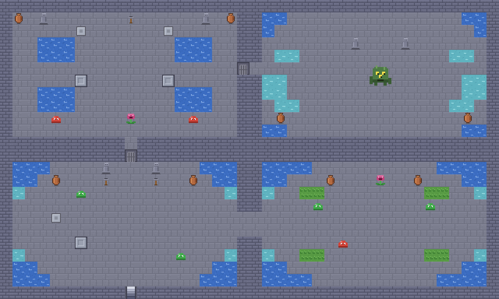
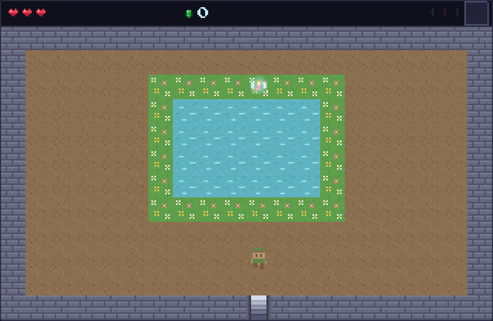
| ✓ | DEED |
|---|---|
| ☐ | Emerald Shard (Vinewood Temple) |
| ☐ | Ruby Shard (Sandstone Ruins) |
| ☐ | Sapphire Shard (Glacier Hollow) |
| ☐ | Hunting Bow • Bomb Bag • Lantern • Power Boots |
| ☐ | HERO'S BLADE from the Sunken Shrine |
| ☐ | All 12 Golden Acorns |
| ☐ | Oak Charm (Nutwick, 12 acorns) |
| ☐ | All 7 bonus Heart Containers (11 hearts total) |
| ☐ | Every cracked wall bombed (D1 revisit too!) |
| ☐ | Both fairy ponds discovered |
| ☐ | Talked to every single villager after the ending |
| ☐ | MORGRATH DEFEATED — CROWN REFORGED |
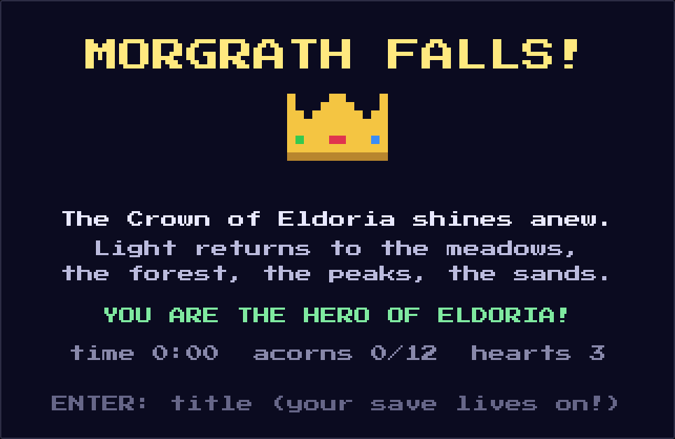
"I have reviewed kingdoms, festivals, and one unusually ambitious turnip. This quest outranks them all." — Pip, age 7, Willow Village Gazette
"The boulder. THE BOULDER. Twenty years!" — Hermit Aldous, five stars
"Chit-chit. CHIT-CHIT-CHIT!" — His Royal Fluffiness King Nutwick, translated from the original Squirrel
THE SHATTERED CROWN — OFFICIAL PLAYER'S GUIDE • MADE WITH ❤ FOR ONE BRAVE HERO • PLAY MORE GAMES WITH YOUR DAD